Djinni 是一个用来生成跨语言的类型声明和接口绑定的工具，主要用于 C++ 和 Java 以及 Objective-C 间的互通。
- 好处：
- 用了接口描述文件。声明清晰、修改简易，并保证了跨平台接口的一致性。
- 自动生成接口绑定代码。免去了绑定 C++ 和 Java (JNI) 及 Objective-C (Objective-C++) 的麻烦。
1 配置djinni
1.1 下载djinni
https://github.com/dropbox/djinni.git 将下载好的djinni放在[example_root]/deps/ 下
此时目录结构为：
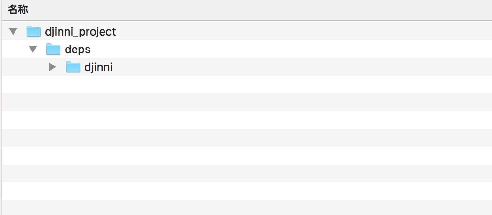
1.2 编译djinni
$ cd [djinni_root]/
$ src/build
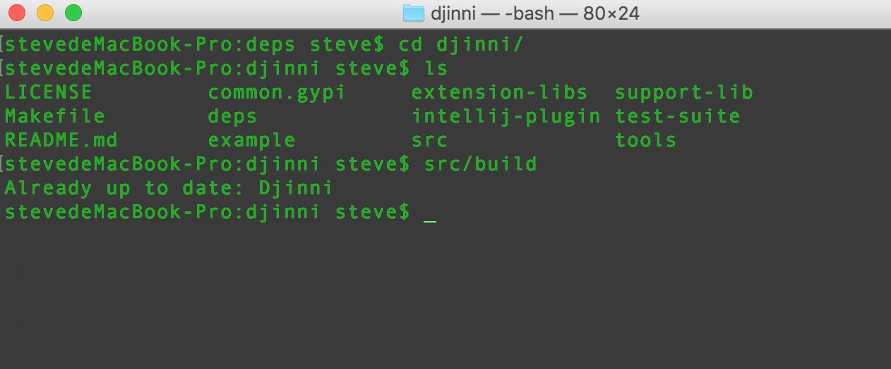
第一次编译的时候会去下载sbt配置
本人系统环境是macOS Sierra 10.12 , 在此环境下sbt下载失败，导致编译失败
如果sbt下载失败的话，项目中放置了一个sbt的压缩包（里边文件默认隐藏的），复制里边的文件到你的用户文件夹下就可以了
2 使用djinni
2.1 编写djinni格式文件
hello_world = interface +c {
static create():hello_world;
get_hello_world(): string;
get_name(): string;
set_name(name:string);
}
命名为helloworld.djinni 并放置在[example_root]/ 下
2.2 编写shell文件
#! /usr/bin/env bash
base_dir=$(cd "`dirname "0"`" && pwd)
cpp_out="$base_dir/generated-src/cpp"
jni_out="$base_dir/generated-src/jni"
objc_out="$base_dir/generated-src/objc"
java_out="$base_dir/generated-src/java/com/mycompany/helloworld"
java_package="com.mycompany.helloworld"
namespace="helloworld"
objc_prefix="HW"
djinni_file="helloworld.djinni"
deps/djinni/src/run \
--java-out $java_out \
--java-package $java_package \
--ident-java-field mFooBar \
\
--cpp-out $cpp_out \
--cpp-namespace $namespace \
\
--jni-out $jni_out \
--ident-jni-class NativeFooBar \
--ident-jni-file NativeFooBar \
\
--objc-out $objc_out \
--objc-type-prefix $objc_prefix \
\
--objcpp-out $objc_out \
\
--idl $djinni_file
命名为run_djinni.sh 并放置在[example_root]/ 下
此时目录结构为：
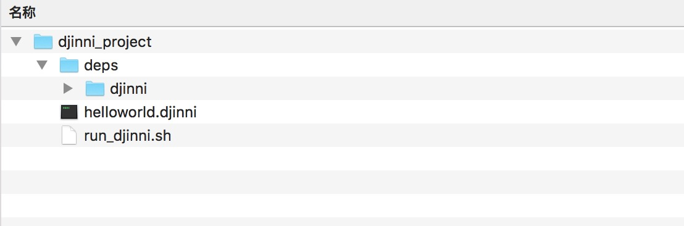
2.3 生成接口代码
$ cd [example_root]/
$ sh ./run_djinni.sh
运行成功输出：
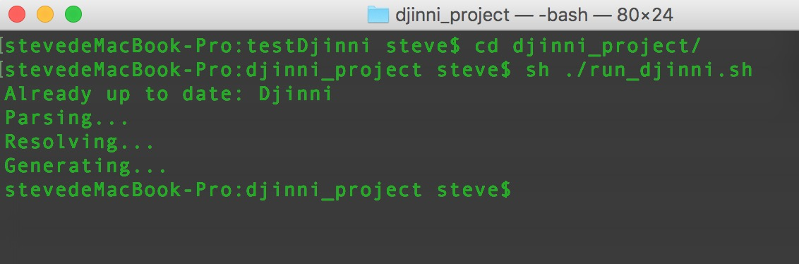
以及现在目录结构：
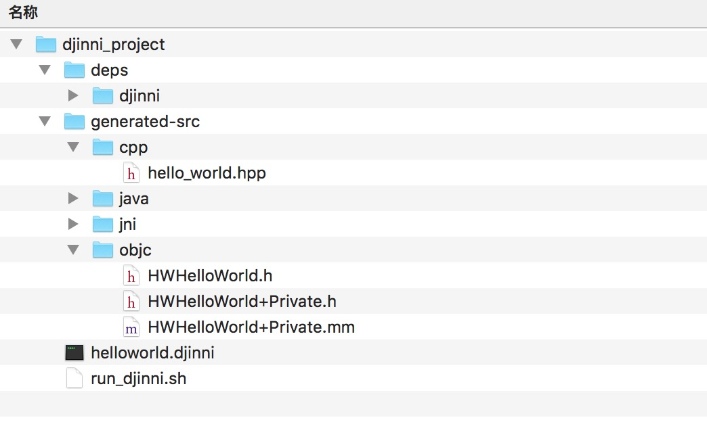
这里可以看到：依据描述文件helloworld.djinni，在generated-src目录下自动生产了 C++ 和 Java 及 Objective-C 的绑定代码。继续要做的，只是写它们的具体实现
3 编写c++代码
3.1 创建c++工程
这里用 XCode 创建一个 C++ 工程，来测试 C++ 接口代码。
首先，打开 XCode ，选择”Create a new Xcode project”。然后，选择”Command Line Tool”，来新建命令行工具。
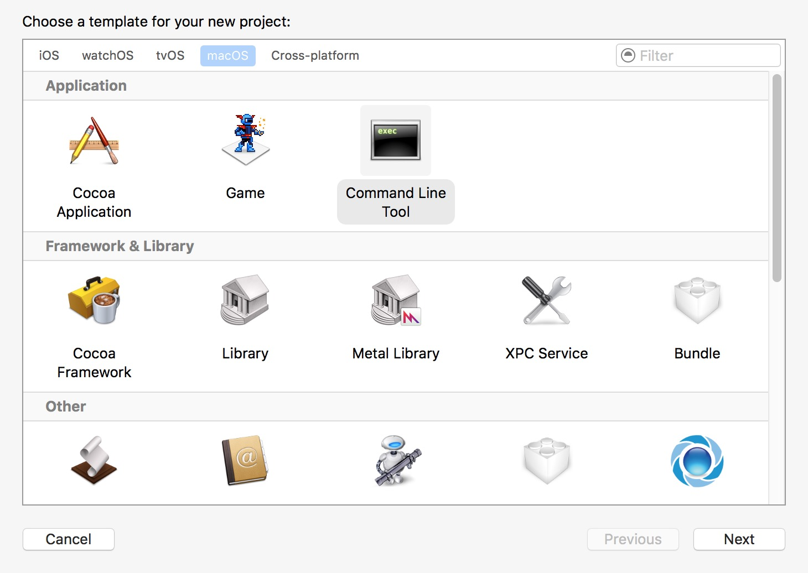
“Next”到下一步时，”Language”选择”C++”。
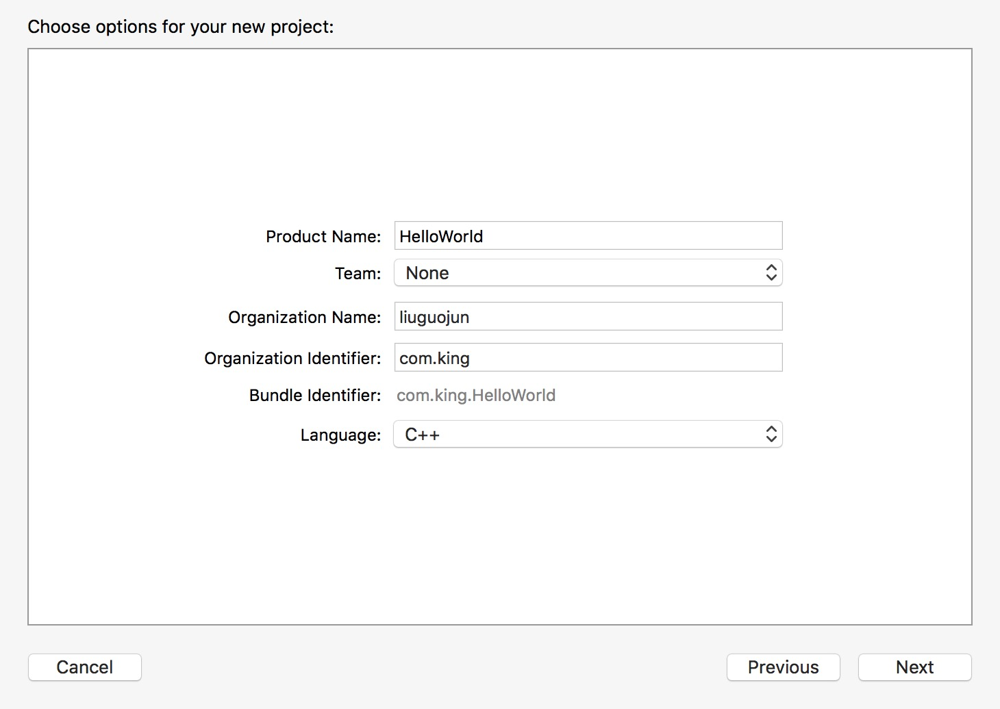
“Next”到下一步，放在[example_root]/ 下
此时目录结构为：
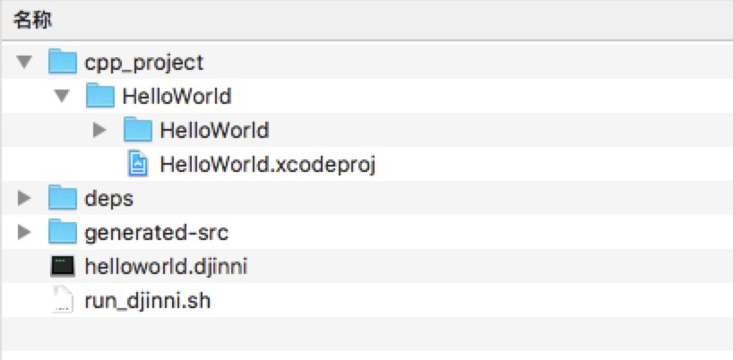
3.2 编写c++实现代码
首先在[example_root]/ 下创建src/cpp目录，用来存放c++实现代码
src/cpp/hello_world_impl.hpp:
#pragma once
#include "hello_world.hpp"
namespace helloworld {
class HelloWorldImpl : public helloworld::HelloWorld {
public:
// Constructor
HelloWorldImpl();
// Our method that returns a string
std::string get_hello_world();
};
}
src/cpp/hello_world_impl.cpp:
#include "hello_world_impl.hpp"
#include <string>
namespace helloworld {
std::shared_ptr<HelloWorld> HelloWorld::create() {
return std::make_shared<HelloWorldImpl>();
}
HelloWorldImpl::HelloWorldImpl() {
}
std::string HelloWorldImpl::get_hello_world() {
std::string myString = "Hello World! ";
time_t t = time(0);
tm now=*localtime(&t);
char tmdescr[200]={0};
const char fmt[]="%r";
if (strftime(tmdescr, sizeof(tmdescr)-1, fmt, &now)>0) {
myString += tmdescr;
}
return myString;
}
}
此时目录结构为：
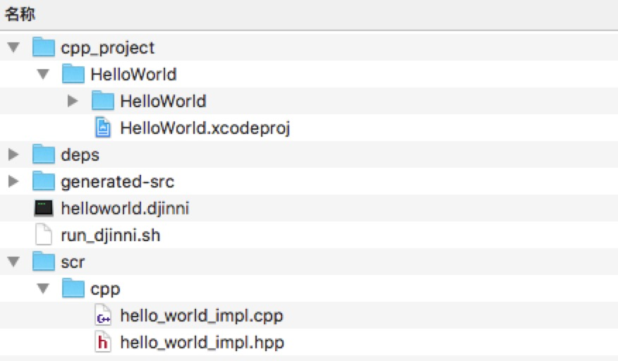
3.3 调试c++代码
接下来，把以下 C++ 接口代码文件，拖动到 Xcode 工程目录来引入(只需引用文件，避免复制。)
generated-src/cpp/hello_world.hpp
src/cpp/hello_world_impl.cpp
src/cpp/hello_world_impl.hpp
此时目录结构为：
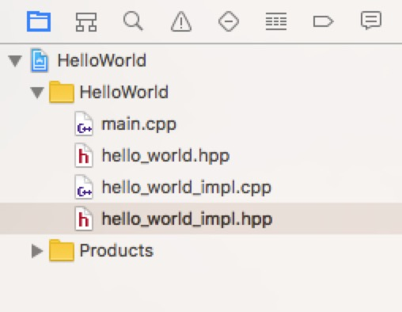
编写以下代码：
#include <iostream>
using namespace std;
#include "hello_world_impl.hpp"
int main(int argc, const char * argv[]) {
helloworld::HelloWorldImpl hw = helloworld::HelloWorldImpl();
string myString = hw.get_hello_world();
cout << myString << endl;
return 0;
}
输出为:
Hello World! 02:28:10 PM
c++代码调试通过
4 iOS工程
4.1 创建ios工程
在[example_root]/ 下创建ios_project目录
Xcode创建ios工程，命名为HelloWorld
4.2 添加文件
将以下目录中文件加入Xcode（只引用不copy），并虚拟目录分组为oc，c++，djinni
[example_root]/generated-src/objc/
[example_root]/generated-src/cpp/
[example_root]/scr/cpp/
[example_root]/deps/djinni/support-lib/objc/
此时目录结构为：
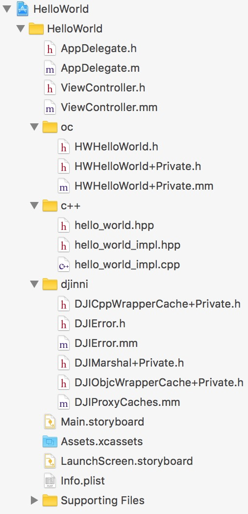
其中
oc文件夹中为djinni生成的接口文件 c++文件夹中为djinni生成的接口文件和我们自己写的c++实现文件 djinni文件夹中为转换文件（拖入工程就可以了）
4.3 调试
此时我们调用c++写的实现代码，只需要调用我们oc文件夹中的接口文件啦
首先引入头文件
#import "HWHelloWorld.h"
接着调用代码
NSString *str = [[HWHelloWorld create] getHelloWorld];
NSLog(@"str:%@",str);
输出
Hello World! 02:28:10 PM
perfect ！！！
问答
Q：oc可以和c++混编为objective-c++，那么我们直接oc和c++互相调用不就行了吗，为什么还要用djinni呢？
A：oc可以和c++混编，但是java是需要通过jni。所以使用djinni就是为了统一接口，让同一份c++代码可以被oc和java调用，让c++工程师、objective-c工程师、java工程师能够愉快的一起合作项目。ps：如果只是单纯的想在oc里边混编c++，可以完全不用djinni
Q：上边的例子中，是c++写实现代码，java和oc调用，那么有没有oc和java写实现代码，c++调用呢？
A：提出这个问题，说明你对c++跨平台有一定的了解了。当然啦，有调用，就有被调用。如果仔细看的上边的例子的话，会发现我们在helloworld.djinni文件中定义接口的时候，我们是这样写的hello_world = interface +c {}，那么这个+c是什么意思的，+c就是c++来实现代码，供其他平台调用。反过来我们可以写 +j +o，意思就是java和oc写实现代码，c++来调用。这样就实现了c++，java，oc之间的互相调用
Q：djinni与世面上的H5技术跨平台，Xamarin跨平台有什么区别呢？
A：首先来回答djinni和h5、Xamarin的区别。djinni可以说是由下至上的跨平台，主要用底层逻辑代码的跨平台，而UI则交给iOS和android平台去完成。h5则是由上至下的跨平台，UI统一，底层逻辑需要iOS和android各自平台去实现。而Xamarin则可以说是上下齐发力，底层是c#翻译ios的cocoa Touch框架和android框架，UI用自创的的框架统一ios和android平台的UI。
优缺点：
djinni：优点是不依赖于IDE，更底层，速度更快，更稳定。缺点是得会c++。如果公司做游戏的，那么c++大神应该会不少（笔者就是这个情况）
H5：前几年h5最大的问题，就是性能，渲染太差，这几年好了很多。缺点是很多底层API调用不到，需要各自平台去实现
Xamarin：笔者有幸研究了大半年的Xamarin，翻译了已经上架的一个APP。优点是统一了语言c#。缺点是收费（现在已经免费了），依赖IDE，要用Xamarin Studio或者VS。对习惯了Xcode的coder可能比较难接受，另外一个缺点，就是ios和android已经有很多成熟的库，而xamarin没有。比如笔者要接一个支付宝支付，然而并没有这样的xamarin库，需要使用者自己去binding。
最后，这个问题，选你适合的跨平台解决方案。
问答会持续更新哦 ！！！
最后
一个根据djinni写成的demo（ios），解决了macOS Sierra下第一次build时出错的问题
原文及demo托管在github上 https://github.com/guojunliu/djinni
如果这篇文章或者demo能帮到你的话，麻烦给个Star，给个星星哦，能让它继续帮到想使用djinni的人